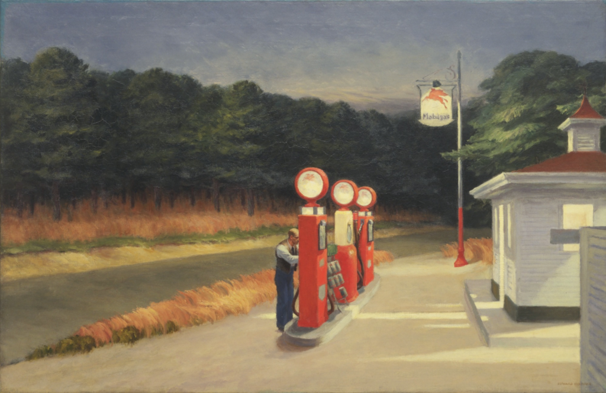

<head>
<meta charset="UTF-8" />
<meta name="keywords" content="drawing, painting" />
<meta name="description" content="drawings by Sunjy" />
<title>Sunjy</title>
<link rel="shortcut icon" type="image/x-icon" href="../../mImages/mCommon/favicon.ico" media="screen" />
<link rel="stylesheet" type="text/css" href="../../mCsses/mCommon/mCssA.css" />
<link rel="stylesheet" type="text/css" href="../../mCsses/mCommon/mCssB.css" />
<link rel="stylesheet" type="text/css" href="../../mCsses/mCommon/mCssC.css" />
<link rel="stylesheet" type="text/css" href="../../mCsses/mCommon/mCssD.css" />
<link rel="stylesheet" type="text/css" href="../../mCsses/mContent/mCssA.css" />
<link rel="stylesheet" type="text/css" href="../../mCsses/mContent/mCssB.css" />
<link rel="stylesheet" type="text/css" href="../../mCsses/mContent/mCssC.css" />
<link rel="stylesheet" type="text/css" href="../../mCsses/mContent/mCssD.css" />
</head>
<script type="text/javascript" src="../../mScripts/mContent/mContentAA.js" /></script>
<script type="text/javascript" src="../../mScripts/mContent/mContentAB.js" /></script>
<script type="text/javascript" src="../../mScripts/mContent/mContentAC.js" /></script>
<script type="text/javascript" src="../../mScripts/mContent/mContentAD.js" /></script>
<script type="text/javascript"></script> 
<script type="text/javascript">
document.write('<div class="mImgAbsolute"></div>');
/*
document.write('<p class="mFontSizeBColor" />From a white paper...</p>');
document.write('<table class="center"><tr><td>');
document.write('');
document.write('</td></tr></table>');
*/
</script>


<script type="text/javascript">
document.write('<p class="mFontSizeBColor" />Gas</p>');
document.write('<p class="mFontSizeSColor" />Gas by Edward Hopper depicts an American gas station at the end of a highway. This composition was a composite of several gas stations that Hopper inspected.<br><br>Hopper struggled with this painting, and he had trouble finding suitable gas stations to paint. Hopper wanted to paint a gas station with the lights lit above the pumps, but the stations in his area only turned the lights on when it was pitch dark, to save energy.<br><br>The light in this painting gives the scene of a gas station and its lone attendant at dusk, an underlying sense of drama.<br><br>Hopper also captured the loneliness of an American country road which makes this picture memorable and leaves an impression with its combination of both natural and artificial light.<br><br>According to Hopper’s wife, this gas station motif was something he had wanted to paint for a long time.<br></p>');
document.write('<table class="center" /><tr><td>');
document.write('<br>Hopper struggled with this painting, and he had trouble finding suitable gas stations to paint. Hopper wanted to paint a gas station with the lights lit above the pumps, but the stations in his area only turned the lights on when it was pitch dark, to save energy.<br><br>The light in this painting gives the scene of a gas station and its lone attendant at dusk, an underlying sense of drama.<br><br>Hopper also captured the loneliness of an American country road which makes this picture memorable and leaves an impression with its combination of both natural and artificial light.<br><br>According to Hopper’s wife, this gas station motif was something he had wanted to paint for a long time.<br>" />');
document.write('</td></tr></table>');
</script>


